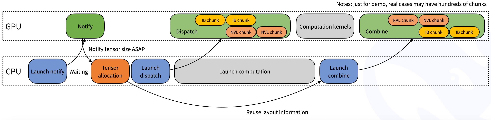

DeepEP V1 (Legacy)
Note: This is the archived documentation for DeepEP V1 (NVSHMEM-based). For the latest V2 documentation, see the main README.
DeepEP (DeepEveryParallel) V1 is the original high-performance communication library for modern machine learning, focused on expert parallelism (EP). It provides high-throughput and low-latency all-to-all GPU kernels, which are also known as MoE dispatch and combine. The library also supports low-precision operations, including FP8.
To align with the group-limited gating algorithm proposed in the DeepSeek-V3 paper, DeepEP V1 offers a set of kernels optimized for asymmetric-domain bandwidth forwarding, such as forwarding data from NVLink domain to RDMA domain. These kernels deliver high throughput, making them suitable for both training and inference prefilling tasks. Additionally, they support SM (Streaming Multiprocessors) number control.
For latency-sensitive inference decoding, DeepEP V1 includes a set of low-latency kernels with pure RDMA to minimize delays. The library also introduces a hook-based communication-computation overlapping method that does not occupy any SM resource.
Notice: the implementation in this library may have some slight differences from the DeepSeek-V3 paper.
Performance
Normal kernels with NVLink and RDMA forwarding
We test normal kernels on H800 (~160 GB/s NVLink maximum bandwidth), with each connected to a CX7 InfiniBand 400 Gb/s RDMA network card (~50 GB/s maximum bandwidth). And we follow the DeepSeek-V3/R1 pretraining setting (4096 tokens per batch, 7168 hidden, top-4 groups, top-8 experts, FP8 dispatching and BF16 combining).
| Type | Dispatch #EP | Bottleneck bandwidth | Combine #EP | Bottleneck bandwidth |
|---|---|---|---|---|
| Intranode | 8 | 153 GB/s (NVLink) | 8 | 158 GB/s (NVLink) |
| Internode | 16 | 43 GB/s (RDMA) | 16 | 43 GB/s (RDMA) |
| Internode | 32 | 58 GB/s (RDMA) | 32 | 57 GB/s (RDMA) |
| Internode | 64 | 51 GB/s (RDMA) | 64 | 50 GB/s (RDMA) |
Low-latency kernels with pure RDMA
We test low-latency kernels on H800 with each connected to a CX7 InfiniBand 400 Gb/s RDMA network card (~50 GB/s maximum bandwidth). And we follow a typical DeepSeek-V3/R1 production setting (128 tokens per batch, 7168 hidden, top-8 experts, FP8 dispatching and BF16 combining).
| Dispatch #EP | Latency | RDMA bandwidth | Combine #EP | Latency | RDMA bandwidth |
|---|---|---|---|---|---|
| 8 | 77 us | 98 GB/s | 8 | 114 us | 127 GB/s |
| 16 | 118 us | 63 GB/s | 16 | 195 us | 74 GB/s |
| 32 | 155 us | 48 GB/s | 32 | 273 us | 53 GB/s |
| 64 | 173 us | 43 GB/s | 64 | 314 us | 46 GB/s |
| 128 | 192 us | 39 GB/s | 128 | 369 us | 39 GB/s |
| 256 | 194 us | 39 GB/s | 256 | 360 us | 40 GB/s |
Quick Start
Requirements
- Ampere (SM80), Hopper (SM90) GPUs, or other architectures with SM90 PTX ISA support
- Python 3.8 and above
- CUDA version
- CUDA 11.0 and above for SM80 GPUs
- CUDA 12.3 and above for SM90 GPUs
- PyTorch 2.1 and above
- NVLink for intranode communication
- RDMA network for internode communication
Download and install NVSHMEM dependency
DeepEP V1 depends on NVSHMEM. Please refer to the NVSHMEM Installation Guide for instructions.
Development
# Build and make symbolic links for SO files
NVSHMEM_DIR=/path/to/installed/nvshmem python setup.py build
# You may modify the specific SO names according to your own platform
ln -s build/lib.linux-x86_64-cpython-38/deep_ep_cpp.cpython-38-x86_64-linux-gnu.so
# Run test cases
# NOTES: you may modify the `init_dist` function in `tests/utils.py`
# according to your own cluster settings, and launch into multiple nodes
python tests/test_intranode.py
python tests/test_internode.py
python tests/test_low_latency.pyInstallation
NVSHMEM_DIR=/path/to/installed/nvshmem python setup.py installInstallation environment variables
NVSHMEM_DIR: the path to the NVSHMEM directory, disable all internode and low-latency features if not specifiedDISABLE_SM90_FEATURES: 0 or 1, whether to disable SM90 features, it is required for SM90 devices or CUDA 11TORCH_CUDA_ARCH_LIST: the list of target architectures, e.g.TORCH_CUDA_ARCH_LIST="9.0"DISABLE_AGGRESSIVE_PTX_INSTRS: 0 or 1, whether to disable aggressive load/store instructions, see Undefined-behavior PTX usage for more details
Network Configurations
DeepEP is fully tested with InfiniBand networks. However, it is theoretically compatible with RDMA over Converged Ethernet (RoCE) as well.
Traffic isolation
Traffic isolation is supported by InfiniBand through Virtual Lanes (VL).
To prevent interference between different types of traffic, we recommend segregating workloads across different virtual lanes as follows:
- workloads using normal kernels
- workloads using low-latency kernels
- other workloads
For DeepEP V1, you can control the virtual lane assignment by setting the NVSHMEM_IB_SL environment variable.
Adaptive routing
Adaptive routing is an advanced routing feature provided by InfiniBand switches that can evenly distribute traffic across multiple paths. Enabling adaptive routing can completely eliminate network congestion caused by routing conflicts, but it also introduces additional latency. We recommend the following configuration for optimal performance:
- enable adaptive routing in environments with heavy network loads
- use static routing in environments with light network loads
Congestion control
Congestion control is disabled as we have not observed significant congestion in our production environment.
Interfaces and Examples
Example use in model training or inference prefilling
The normal kernels can be used in model training or the inference prefilling phase (without the backward part) as the below example code shows.
import torch
import torch.distributed as dist
from typing import List, Tuple, Optional, Union
from deep_ep import Buffer, EventOverlap
# Communication buffer (will allocate at runtime)
_buffer: Optional[Buffer] = None
# Set the number of SMs to use
# NOTES: this is a static variable
Buffer.set_num_sms(24)
# You may call this function at the framework initialization
def get_buffer(group: dist.ProcessGroup, hidden_bytes: int) -> Buffer:
global _buffer
# NOTES: you may also replace `get_*_config` with your auto-tuned results via all the tests
num_nvl_bytes, num_rdma_bytes = 0, 0
for config in (Buffer.get_dispatch_config(group.size()), Buffer.get_combine_config(group.size())):
num_nvl_bytes = max(config.get_nvl_buffer_size_hint(hidden_bytes, group.size()), num_nvl_bytes)
num_rdma_bytes = max(config.get_rdma_buffer_size_hint(hidden_bytes, group.size()), num_rdma_bytes)
# Allocate a buffer if not existed or not enough buffer size
if _buffer is None or _buffer.group != group or _buffer.num_nvl_bytes < num_nvl_bytes or _buffer.num_rdma_bytes < num_rdma_bytes:
_buffer = Buffer(group, num_nvl_bytes, num_rdma_bytes)
return _buffer
def get_hidden_bytes(x: torch.Tensor) -> int:
t = x[0] if isinstance(x, tuple) else x
return t.size(1) * max(t.element_size(), 2)
def dispatch_forward(x: Union[torch.Tensor, Tuple[torch.Tensor, torch.Tensor]],
topk_idx: torch.Tensor, topk_weights: torch.Tensor,
num_experts: int, previous_event: Optional[EventOverlap] = None) -> \
Tuple[Union[torch.Tensor, Tuple[torch.Tensor, torch.Tensor]], torch.Tensor, torch.Tensor, List, Tuple, EventOverlap]:
# NOTES: an optional `previous_event` means a CUDA event captured that you want to make it as a dependency
# of the dispatch kernel, it may be useful with communication-computation overlap. For more information, please
# refer to the docs of `Buffer.dispatch`
global _buffer
# Calculate layout before actual dispatch
num_tokens_per_rank, num_tokens_per_rdma_rank, num_tokens_per_expert, is_token_in_rank, previous_event = \
_buffer.get_dispatch_layout(topk_idx, num_experts,
previous_event=previous_event, async_finish=True,
allocate_on_comm_stream=previous_event is not None)
# Do MoE dispatch
# NOTES: the CPU will wait for GPU's signal to arrive, so this is not compatible with CUDA graph
# Unless you specify `num_worst_tokens`, but this flag is for intranode only
# For more advanced usages, please refer to the docs of the `dispatch` function
recv_x, recv_topk_idx, recv_topk_weights, num_recv_tokens_per_expert_list, handle, event = \
_buffer.dispatch(x, topk_idx=topk_idx, topk_weights=topk_weights,
num_tokens_per_rank=num_tokens_per_rank, num_tokens_per_rdma_rank=num_tokens_per_rdma_rank,
is_token_in_rank=is_token_in_rank, num_tokens_per_expert=num_tokens_per_expert,
previous_event=previous_event, async_finish=True,
allocate_on_comm_stream=True)
# For event management, please refer to the docs of the `EventOverlap` class
return recv_x, recv_topk_idx, recv_topk_weights, num_recv_tokens_per_expert_list, handle, event
def dispatch_backward(grad_recv_x: torch.Tensor, grad_recv_topk_weights: torch.Tensor, handle: Tuple) -> \
Tuple[torch.Tensor, torch.Tensor, EventOverlap]:
global _buffer
# The backward process of MoE dispatch is actually a combine
# For more advanced usages, please refer to the docs of the `combine` function
combined_grad_x, combined_grad_recv_topk_weights, event = \
_buffer.combine(grad_recv_x, handle, topk_weights=grad_recv_topk_weights, async_finish=True)
# For event management, please refer to the docs of the `EventOverlap` class
return combined_grad_x, combined_grad_recv_topk_weights, event
def combine_forward(x: torch.Tensor, handle: Tuple, previous_event: Optional[EventOverlap] = None) -> \
Tuple[torch.Tensor, EventOverlap]:
global _buffer
# Do MoE combine
# For more advanced usages, please refer to the docs of the `combine` function
combined_x, _, event = _buffer.combine(x, handle, async_finish=True, previous_event=previous_event,
allocate_on_comm_stream=previous_event is not None)
# For event management, please refer to the docs of the `EventOverlap` class
return combined_x, event
def combine_backward(grad_combined_x: Union[torch.Tensor, Tuple[torch.Tensor, torch.Tensor]],
handle: Tuple, previous_event: Optional[EventOverlap] = None) -> \
Tuple[Union[torch.Tensor, Tuple[torch.Tensor, torch.Tensor]], EventOverlap]:
global _buffer
# The backward process of MoE combine is actually a dispatch
# For more advanced usages, please refer to the docs of the `dispatch` function
grad_x, _, _, _, _, event = _buffer.dispatch(grad_combined_x, handle=handle, async_finish=True,
previous_event=previous_event,
allocate_on_comm_stream=previous_event is not None)
# For event management, please refer to the docs of the `EventOverlap` class
return grad_x, eventMoreover, inside the dispatch function, we may not know how many tokens to receive for the current rank. So an implicit CPU wait for GPU received count signal will be involved, as the following figure shows.

Example use in inference decoding
The low latency kernels can be used in the inference decoding phase as the below example code shows.
import torch
import torch.distributed as dist
from typing import Tuple, Optional
from deep_ep import Buffer
# Communication buffer (will allocate at runtime)
# NOTES: there is no SM control API for the low-latency kernels
_buffer: Optional[Buffer] = None
# You may call this function at the framework initialization
def get_buffer(group: dist.ProcessGroup, num_max_dispatch_tokens_per_rank: int, hidden: int, num_experts: int) -> Buffer:
# NOTES: the low-latency mode will consume much more space than the normal mode
# So we recommend that `num_max_dispatch_tokens_per_rank` (the actual batch size in the decoding engine) should be less than 256
global _buffer
num_rdma_bytes = Buffer.get_low_latency_rdma_size_hint(num_max_dispatch_tokens_per_rank, hidden, group.size(), num_experts)
# Allocate a buffer if not existed or not enough buffer size
if _buffer is None or _buffer.group != group or not _buffer.low_latency_mode or _buffer.num_rdma_bytes < num_rdma_bytes:
# NOTES: for the best performance, the QP number **must** be equal to the number of the local experts
assert num_experts % group.size() == 0
_buffer = Buffer(group, 0, num_rdma_bytes, low_latency_mode=True, num_qps_per_rank=num_experts // group.size())
return _buffer
def low_latency_dispatch(hidden_states: torch.Tensor, topk_idx: torch.Tensor, num_max_dispatch_tokens_per_rank: int, num_experts: int):
global _buffer
# Do MoE dispatch, compatible with CUDA graph (but you may restore some buffer status once you replay)
recv_hidden_states, recv_expert_count, handle, event, hook = \
_buffer.low_latency_dispatch(hidden_states, topk_idx, num_max_dispatch_tokens_per_rank, num_experts,
async_finish=False, return_recv_hook=True)
# NOTES: the actual tensor will not be received only if you call `hook()`,
# it is useful for double-batch overlapping, but **without any SM occupation**
# If you don't want to overlap, please set `return_recv_hook=False`
# Later, you can use our GEMM library to do the computation with this specific format
return recv_hidden_states, recv_expert_count, handle, event, hook
def low_latency_combine(hidden_states: torch.Tensor,
topk_idx: torch.Tensor, topk_weights: torch.Tensor, handle: Tuple):
global _buffer
# Do MoE combine, compatible with CUDA graph (but you may restore some buffer status once you replay)
combined_hidden_states, event_overlap, hook = \
_buffer.low_latency_combine(hidden_states, topk_idx, topk_weights, handle,
async_finish=False, return_recv_hook=True)
# NOTES: the same behavior as described in the dispatch kernel
return combined_hidden_states, event_overlap, hookFor two-micro-batch overlapping, you can refer to the following figure. With our receiving hook interface, the RDMA network traffic is happening in the background, without costing any GPU SMs from the computation part. But notice, the overlapped parts can be adjusted, i.e., the 4 parts of attention/dispatch/MoE/combine may not have the exact same execution time. You may adjust the stage settings according to your workload.

Roadmap (V1)
- AR support
- Refactor low-latency mode AR code
- A100 support (intranode only)
- Support BF16 for the low-latency dispatch kernel
- Support NVLink protocol for intranode low-latency kernels
- TMA copy instead of LD/ST
- Intranode kernels
- Internode kernels
- Low-latency kernels
- SM-free kernels and refactors
- Fully remove undefined-behavior PTX instructions
Notices
Easier potential overall design
The V1 implementation uses queues for communication buffers which save memory but introduce complexity and potential deadlocks. If you're implementing your own version based on DeepEP V1, consider using fixed-size buffers allocated to maximum capacity for simplicity and better performance. For a detailed discussion of this alternative approach, see https://github.com/deepseek-ai/DeepEP/issues/39.
Undefined-behavior PTX usage
- For extreme performance, we discover and use an undefined-behavior PTX usage: using read-only PTX
ld.global.nc.L1::no_allocate.L2::256Bto read volatile data. The PTX modifier.ncindicates that a non-coherent cache is used. But the correctness is tested to be guaranteed with.L1::no_allocateon Hopper architectures, and performance will be much better. The reason we guess may be: the non-coherent cache is unified with L1, and the L1 modifier is not just a hint but a strong option, so that the correctness can be guaranteed by no dirty data in L1. - Initially, because NVCC could not automatically unroll volatile read PTX, we tried using
__ldg(i.e.,ld.nc). Even compared to manually unrolled volatile reads, it was significantly faster (likely due to additional compiler optimizations). However, the results could be incorrect or dirty. After consulting the PTX documentation, we discovered that L1 and non-coherent cache are unified on Hopper architectures. We speculated that.L1::no_allocatemight resolve the issue, leading to this discovery. - If you find kernels not working on some other platforms, you may add
DISABLE_AGGRESSIVE_PTX_INSTRS=1tosetup.pyand disable this, or file an issue.
Auto-tuning on your cluster
For better performance on your cluster, we recommend to run all the tests and use the best auto-tuned configuration. The default configurations are optimized on the DeepSeek's internal cluster.